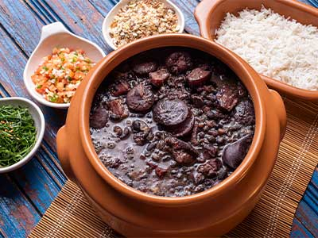

Feijoada
Ingredients
- 1 kg of black beans
- 3 links of paio sausage
- 1 kg of salted pork loin
- 500g of salted pork ribs
- 3 links of smoked calabresa sausage
- 500g of jerked beef
- 200g of bacon
- 3 onions, chopped
- 1 garlic bulb, minced
- 50g of dried parsley
- 500g of collard greens
- 3 bay leaves
- 10 liters of boiling water
- Vegetable oil, for frying
- Salt, to taste
How to Make it
-
Cooking:
-
Prepare the Meats:
Change the water for the salted meats 4 more times in the morning. Trim excess fat from the meats, cut the pork loin and jerked beef into 4 cm cubes, and separate the ribs into 1-2 rib portions. -
Remove Excess Fat:
Pour boiling water over the meats to remove excess fat. -
Pressure Cook Meats:
Add the prepared meats to a pressure cooker, cover with boiling water, and cook on low heat for about 40 minutes or until tender.
-
Prepare the Meats:
-
Prepare Beans and Sausages:
-
Cook the Beans:
Transfer the soaked beans to a pressure cooker with boiling water. Cook on low heat for about 30 minutes. -
Prepare the Sausages:
Peel the paio and calabresa sausages. Slice the calabresa into thick rounds and the paio into slightly thicker slices. Cut the bacon into small cubes.
-
Cook the Beans:
-
Combine and Cook:
-
Add Sausages and Bacon:
Once the beans are nearly cooked, add the sliced sausages, paio, and bacon to the pot. Stir gently and simmer without the pressure cooker lid. -
Check Water Levels:
Monitor the water level, adding boiling water as needed to maintain a thick, stew-like consistency.
-
Add Sausages and Bacon:
-
Make the Seasoning:
-
Sauté Aromatics:
In a large pan, heat 2 tablespoons of oil. Add half the minced garlic and 2/3 of the chopped onions. Sauté until golden brown. Reserve the remaining onions and garlic for the greens. -
Mash Some Beans:
Scoop out a ladle of cooked beans, mash them, and add them to the sautéed aromatics for extra flavor. Stir this mixture back into the feijoada pot.
-
Sauté Aromatics:
-
Prepare Greens:
Slice the collard greens into thin strips. In a separate pan, heat 2 tablespoons of oil. Add the reserved garlic and onions, cook until golden, then add the collard greens. Sauté until just tender, seasoning with salt to taste. -
Combine and Simmer:
Add the cooked meats and seasonings back to the pot with the beans. Add the bay leaves and adjust the salt. Simmer for another 10 minutes. -
Serve:
Serve the feijoada hot with white rice, sautéed collard greens, orange slices, and farofa (toasted cassava flour).